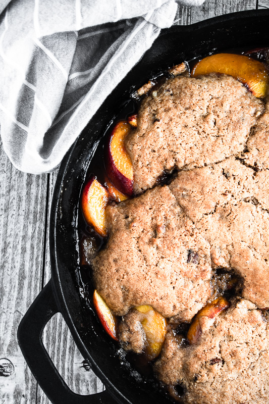

Peach Cobbler

Description
Peach cobbler is a delicious treat that melds together sliced fruit, sugar and a beautiful golden topping. If you love dessert but don't love the floury mess or mathematical challenge of rolling out perfectly concentric pie crusts, then this tutorial on how to make a peach cobbler recipe will be your jam.
Ingredients
- 6 to 8 large ripe peaches, peeled and sliced
- 2-1/2 tablespoons cornstarch
- 3/4 to 1 cup sugar
- 1 cup all-purpose flour
- 1 cup sugar
- 1 teaspoon baking powder
- 2 large egg yolks, room temperature
- 1/4 cup butter, melted
- 2 large egg whites, room temperature, stiffly beaten
Directions
- Preheat oven to 375F degrees.
- Peel and slice peaches
If this is your first time tackling a peach cobbler recipe, you're going to be a little bit surprised by how picky peaches are. Firstly, you need to get rid of the pit. Prior to peeling your peaches, which will make them far too slippery to handle, slice around the peach lengthwise and grasp each half of the peach, twisting to separate. Then, remove the pit and begin to slice and peel.
- Combine ingredients
First combine the sliced peaches, cornstarch and sugar and pour them into a greased 13x9-inch baking dish. Then, in another bowl, combine the flour, egg yolks, butter, baking powder and sugar. Fold in the egg whites. Spread the topping mixture over the peaches, or plop down mounds of the topping in biscuit-like shapes, if you're a stickler for tradition.
- Bake until bubbly
Your cobbler needs to bake at 375F degrees for about 45 minutes, or until it's bubbly and your biscuit crust is golden brown.